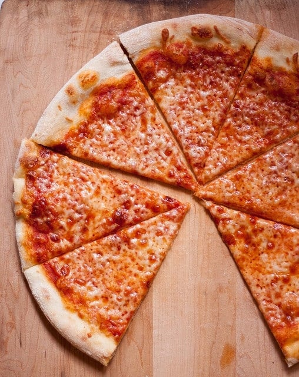

New York Style Pizza Recipe

Description
The New York Style pizza is a staple of American culture, bringing thin crust with a nice ammount of cheese, no toppings are necessary.
Ingredients
- Water
- Sugar
- Kosher Salt
- Yeast
- Oil
- Bread Flour(Unbleached)
- Pizza Sauce(Marinara reccomended)
- Pepperoni
- Mozzarella CHeese
Steps
- Activate the yeast. In a glass measuring cup, combine the warm water and yeast. Set aside for about 5 minutes to activate.
- Combine remaining ingredients. In the bowl of a stand mixer fitted with the paddle attachment, stir together the flour, sugar, salt, and olive oil.
- Add water yeast mixture. Add the water yeast mixture and knead on medium speed for about 8 minutes or until a smooth dough forms.
- Rest the dough. Cover the bowl with a towel and allow the dough to rest for 15 minutes.
- Shape dough into taut ball. Turn the dough out onto a non-floured surface and shape into a smooth, taut ball by pulling the dough toward you and twisting at the same time.
- Proof overnight. Transfer the dough to a medium bowl greased with olive oil. Cover the bowl with plastic wrap and place in the fridge for the dough to proof overnight or up to 36 hours.
- Stretch out the dough. Remove dough from the fridge and set out at room temperature 2 hours before baking. About 30 minutes before assembling the pizza, preheat the oven to 550 degrees F. Place the dough on a clean surface and gently stretch it out to nearly 14 inches, keeping an even crust around the edges.
- Transfer to pizza steel. Once it's nearly there, transfer it to the Baker's Secret 14" Steel Pizza Crisper and finish stretching it out to the edges.
- Assemble the pizza. Sprinkle the grated mozzarella evenly all over the dough, then dollop the pizza sauce on top.
- Add toppings & bake. Add pepperoni slices or any other toppings as desired. Bake the pizza for about 6 minutes or until the crust is deeply golden and the cheese is evenly melted. Cut the pizza into 8 slices and enjoy!